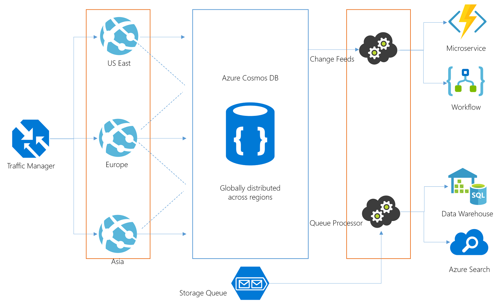

I wanted to assess Azure Cosmos DB to see possibilities of converting some of our backend applications to use this database technology to provide a globally distributed database that we desperately need as our services now cover a bigger geographic location. However, this post is not about Cosmos DB specifically! It is mainly about notes about the architecture of the pieces that surround Cosmos and how I am thinking to implement them.
Macro Architecture
This is how I imagines our system to look like:

In this post, I would like to concentrate only on the components that are boxed in orange. Namely, the Web API layer and the two processors.
Azure App Service, Docker & Kubernetes
We have been using Azure App Service for a while and we are happy with it. We have experience in managing it, scaling it and configuring it. I did not want to change that. So I decided to continue to use Azure App Service to host our Web API layer which will be written in .NET Core. This layer communicates with Cosmos DB to provide a multi-regional access to our customers.
I wanted to monitor Cosmos DB changes to launch different Microservices in the form of Azure Functions, Logic Apps or other processes. I could use Azure Functions to track the Cosmos DB changes but I decided to write my own little .NET Core stand-alone Console app using the Microsoft Change Feed library which makes things quite easy.
Normally, I use WebJobs to handle queue processing and I do have a lot of experience with this. However, in .NET Core, the deployment of a WebJob is not very clear to me so I decided to write a stand-alone console app based on WebJobs SDK but can be deployed somewhere else.
To host and deploy the two stand-alone .NET core console apps i.e. Change Feeder and Queue Processor, opted to make them Docker images and deploy them to a Kubernetes cluster.
Containerizing the WebJobs Console App
I based my code on this blog post by Matt Roberts. My solution has several projects...but two are important for this step: AvalonWebJobs and AvalonWebDal. AvalonWebDal is a class library that has common functionality that I depend on. I used the following Docker file to build the WebJobs console app:
FROM microsoft/dotnet:2.0-sdk as build
WORKDIR /app
COPY . .
WORKDIR /app/AvalonWebDal
RUN dotnet restore
WORKDIR /app/AvalonWebJobs
RUN dotnet restore
RUN dotnet publish --output /output --configuration Release
FROM microsoft/dotnet:2.0-runtime
COPY --from=build /output /app
WORKDIR /app
ENTRYPOINT [ "dotnet", "AvalonWebJobs.dll" ]
I used the following Docker command to build the image:
docker build --file docketfile.webjobs --no-cache -t avalonwebjobs .
and the following to test locally:
docker run --rm -ti avalonwebjobs
Containerizing the Change Feeder App
I based my code on this documentation post by Microsoft. My solution has several projects...but two are important for this step: AvalonChangeFeeder and AvalonWebDal. AvalonWebDal is a class library that has common functionality that I depend on. I used the following Docker file to build the WebJobs console app:
FROM microsoft/dotnet:2.0-sdk as build
WORKDIR /app
COPY . .
WORKDIR /app/AvalonWebDal
RUN dotnet restore
WORKDIR /app/AvalonChangeFeeder
RUN dotnet restore
RUN dotnet publish --output /output --configuration Release
FROM microsoft/dotnet:2.0-runtime
COPY --from=build /output /app
WORKDIR /app
ENTRYPOINT [ "dotnet", "AvalonChangeFeeder.dll" ]
I used the following Docker command to build the image:
docker build --file docketfile.changefeeder --no-cache -t avalonchangefeeder .
and the following to test locally:
docker run --rm -ti avalonchangefeeder
Important note:
Make sure that the .csproj project file contains the following item groups so that the appsettings will be available in the container. Failure to do so will cause an error message unable to find appsettngs.json and it is not optional:
<ItemGroup>
<None Remove="appsettings.json" />
</ItemGroup>
<ItemGroup>
<Content Include="appsettings.json">
<CopyToPublishDirectory>PreserveNewest</CopyToPublishDirectory>
</Content>
</ItemGroup>
Kubernetes
I used this documentation link to spawn a test 1-node k8s cluster in Azure. The process is really simple and quick. I tagged and published my two container images to an Azure Container Registry using this documentaion link.
Now time to actually deploy to the k8s cluster.
Deployments
Becasue I wanted to scale the two web jobs and the change feeder separately, I opted to create two deployments: one for the web jobs and another for the change feeder. Alternatively, I could have used a two-pod deployment but this will have meant that my two containers will need to be scaled the same since the unit of scaling in k8s is the deployment ...not the pod. Please refer to this stack overflow issue for more information.
I used the following .yml file for the WebJobs k8s deployment:
apiVersion: extensions/v1beta1
kind: Deployment
metadata:
name: avalon-webjobs-deploy
spec:
replicas: 1
minReadySeconds: 10
strategy:
type: RollingUpdate
rollingUpdate:
maxUnavailable: 1
maxSurge: 1
template:
metadata:
labels:
app: avalon-app
spec:
containers:
- name: avalon-webjobs-pod
image: avalonacr.azurecr.io/avalonwebjobs:v1
imagePullPolicy: Always
and the following kubectl command to deploy:
kubectl create -f avalon-webjobs-app.yml
I used the following .yml file for the Change feeder k8s deployment:
apiVersion: extensions/v1beta1
kind: Deployment
metadata:
name: avalon-changefeeder-deploy
spec:
replicas: 1
minReadySeconds: 10
strategy:
type: RollingUpdate
rollingUpdate:
maxUnavailable: 1
maxSurge: 1
template:
metadata:
labels:
app: avalon-app
spec:
containers:
- name: avalon-changefeeder-pod
image: avalonacr.azurecr.io/avalonchangefeeder:v1
imagePullPolicy: Always
and the following kubectl command to deploy:
kubectl create -f avalon-changefeeder-app.yml
Observations
Initialy I set the number of replicas to one so I can make sure that everything is running well before I scale the k8s deployments.
After the deployment as above, I used kubectl get pods to see the status of the nodes. I noticed that the webjobs pod is in running state (which is desired) while the change feeder container is in CrashLoopBackOff state. Humm....after some reasearch, I found this helpful stack overflow issue. So I used the following command to see the actual console logs:
kubectl logs avalon-changefeeder-deploy-1476356743-35g55 -c avalon-changefeeder-pod
After fiddling with it for a while, I discovered the problem has to do with how the change feeder console app was coded. It uses a typical Console.ReadKey method to make the application run until a key is pressed. So I modified my code based on this useful code snippet, rebuild my container and re-deployed and yes....the change feeder pod is in running state.
It took me a while to get the above to work. This is because I was updating the image in the container registry without changing the tag. This did not force a re-pull and I ended up not using the latest image that I was deploying to the container. It seems that k8s caches the images unless you add to the deployment file a imagePullPolicy: Always in the container spec. Doing so forces k8s to re-pull the image. The other option is to change the image tag.
Now things look better ...but there is another problem. Upon termination, the change feeder container needs to de-register and clean up some resources. Unfortunately I noticed when I issue a docker stop <id>, the process is abruplty terminated and there is no change for the change feeder thread to clean up. I found a good article that describes how to gracefully stop Docker containers which goes into some detail to describe the best way to handle it. However, since I am using a .NET Core app, I really did not find an easy way to handle the two Linux signales: SIGINT and SIGTERM. I did find a lot of discussions about it here. As it stands now, if I run the container in an intercative mode using docker run --rm -ti avalonchangefeeder, for example, and then perform control-c or control-break, the container shuts down gracefully. However, if I issue a docker stop, the container abruplty exists without giving any chance for the change feeder to do any cleanup :-(
Application Insights
I used Application Insights to trace and track what is happening inside the container. This provide a really powerful way to monitor what is happening inside the container. I noticed that the Application Insights has a Kubernetes extension....but I am not using it yet.
Scaling
Now that everything is in Kubernetes, we can scale the deployments up and down as we need. Scaling the web jobs deployment up to multiple replicas provide several consumers of the queue and scaling the change feeder deployment up to multiple replicas automatically adjusts the divide the work among themselves.